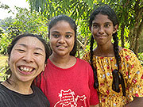
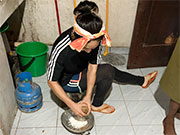
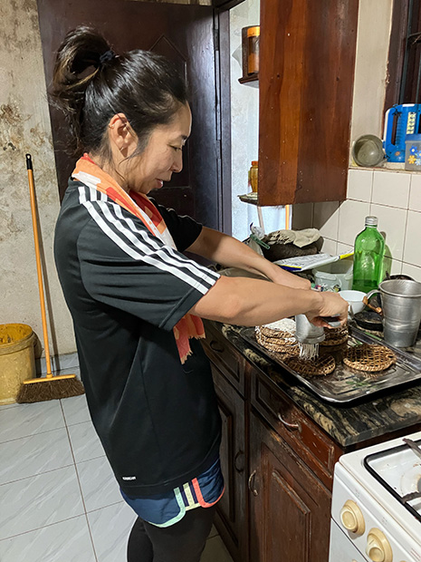
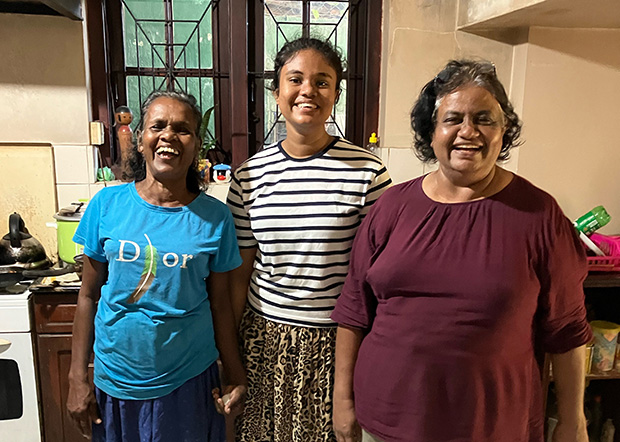
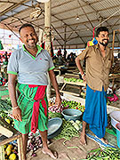
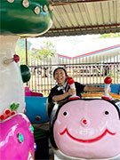
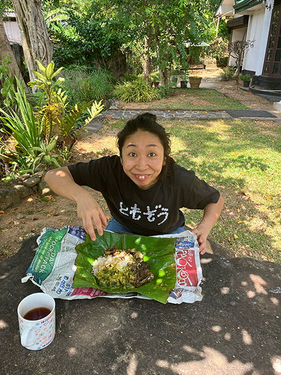

ホストファミリーと♪
「事前に不安な点を聞き対処できたので、留学に戸惑うことはなかったです。
また、様々な情報提供（蚊など）をしてくれたのでありがたかったです。
この留学プログラムは、
ホームステイをして、日常会話で英語が学べること。
シンハラ語も学べること。
そして何より、スリランカ料理を学べること！！！
で決めました。
ホームステイをして、日常会話で英語が学べること。
シンハラ語も学べること。
そして何より、スリランカ料理を学べること！！！
で決めました。


ストリングホッパー作り！
レッスンは楽しく、ホストファミリーとの生活もとても楽しかったです。
みんなフレンドリー&親切、素晴らしい対応でした。スリランカでのホームステイの経験は、Awesome！！！の一言につきます。
みんなフレンドリー&親切、素晴らしい対応でした。スリランカでのホームステイの経験は、Awesome！！！の一言につきます。
スリランカ料理がすごく好きなこともあり、こんなに地域密着なスリランカ生活が送れてすごく楽しかったです。
毎日料理が学べて、しかも英語で学べて、とてもプライスレスな日々でした。
本当に本当にスペシャルな時間でした！！！
毎日料理が学べて、しかも英語で学べて、とてもプライスレスな日々でした。
本当に本当にスペシャルな時間でした！！！


みんな親切でフレンドリー
スリランカには、コロナ前に一度行ったこともあり、今回は物価高騰を感じました。
でも、スリランカの人々はみんな親切でフレンドリーでステキな人々でした。
その印象はスリランカ滞在中不変でした。
また、スリランカへぜひ！！！！行ってみたいです。
でも、スリランカの人々はみんな親切でフレンドリーでステキな人々でした。
その印象はスリランカ滞在中不変でした。
また、スリランカへぜひ！！！！行ってみたいです。
スリランカ旅行中に、滞在するホテルは全て洗濯機がなかったので、Wash Bagを持って行ったらとても便利だったなぁと思ったので、次回は持って行きます。

遊園地も堪能♪

中庭のランチ最高☆
たったの15日間の滞在だったけど、別れる時にあんなに号泣するとは思わなかったです。
それほど濃く、ステキな日々だったんだなぁと思いました。
それほど濃く、ステキな日々だったんだなぁと思いました。
また来年もホームステイしたいなと思っています。
またその時はよろしくお願いします。
ありがとうございました！」
またその時はよろしくお願いします。
ありがとうございました！」
とってもカラフル～